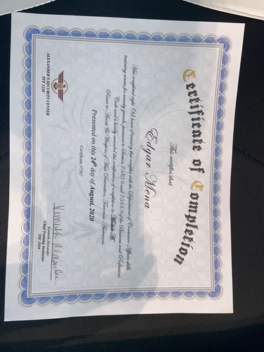
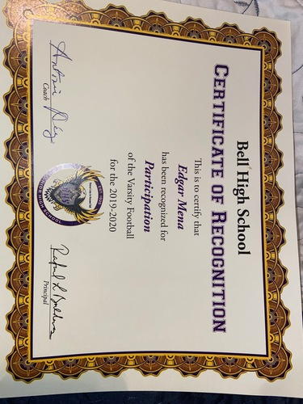

Edgar Mena
Hello everyone my name is Edgar Mena and I am a student at the University of California Riverside. I am a very ambitious person who is engaged in acquiring different skills and obtaining new knowledge. I like to challenge myself to different activities that will test my ability to focus and be determined while still succeeding during the task. I am a hardworking individual who tries to overcome any obstacle that is set out in front of me. When it comes to school assignments or work ethic I always strive to perfect my craft in order to further success within my courses. Regarding either my academics or my work environment I always ensure that I give my 100% effort in order to try my best and attempt to succeed. Currently I am a full-time student while working part-time as a security official. As long as one is focused and is determined to complete their tasks and responsibilities it is evident that a person has a better chance to succeed.
At the University of California Riverside I am currently an incoming freshman who is eager to learn and acquire new sets of skills and information as well. My experience so far has been wondeful, although it can get tough at times I tend to focus on the positive to be able to overcome challanges I might face and make it a success. With this new routine included in my daily life I have learned to adapt myself in order to handle and process the different assignments and projects provided by my different classes. My goal in attending a great university such as UCR is to be able to expand my knowledge in various courses and themes that are included in classes. This will ultimatley aid me into forming a bright and successful path in order to pave a successful future towards the career I select to follow and achieve one day. When attempting to achieve this goal I will dedicate countless hours of studying and sacrifice for me to be able to pass my courses every year and slowly overcome the steps it takes to complete my dreams.
As a Security Officer I take my job very seriously, like the responsibilities I have encountered as a student I always try my best to fulfill my duites both academically and career wise. My job has taught me different skills such as being dependable and working in a efficient manner in order to thrive within the material in my courses and the objectives set in my post as securtiy offcier. I have shifted the aspects I have gained from my career as a security offcier and have induced them into they style of learning I am developing to have various prosperous academic years ahead of me. To conclude the most valuable piece of advice I have recieved is from the teachings of my parents, they stated no matter how tough things seem their is always an alternative way to attempt to be succesfull. I have learned that many times you will fail before you actually achieve your goals.
Experience
Security Officer
• Guard and protect trailer port
• Initiates perimeter checks every hour
• Experience and trained through a security guard program
Uber Eats Driver
• Responsible for delivering food to satisfy the consumer
• Picks up order from restaurant and delivers to the doorstep of your home
Key Club Organization
• Participant in beach clean ups in order to promote a healthy environment
• Prepared meals for the homeless as well as provide other rescources such as clothing and water.
• Involved in several events (beach clean ups, meals for the homeless, aid the elderly
Education
UC Riverside
Bell Senior High School
Portfolio

